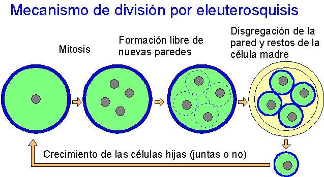
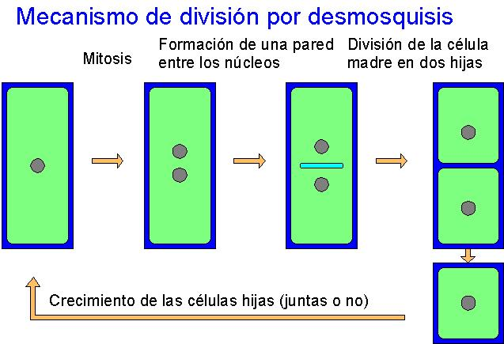
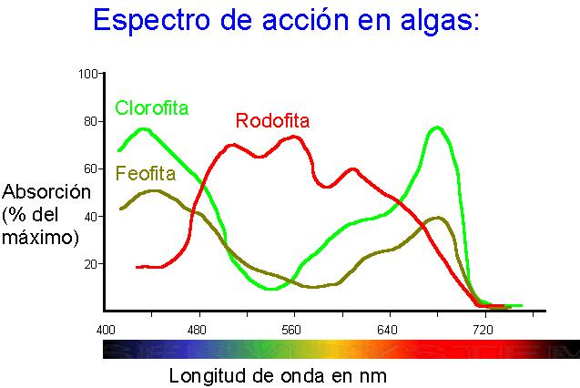
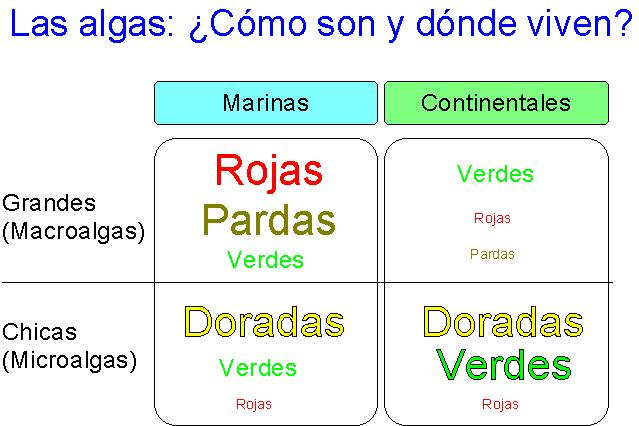

| Pigmentos fotosintéticos | Características | Tipos | Función y clases |
| Clorofilas | 4 anillos de carbono con dobles enlaces (tetrapirrol) formando una cadena cerrada + cadena de fitol (alcohol) | a | Pigmento principal en todas las clases |
| b | Auxiliar en Clorofitas y Euglenofitas | ||
| c | Auxiliar en Dinofitas,
Crisofitas, Feofitas |
||
| Carotenoides | Hidrocarburos alifáticos puros de 40 átomos de C | Carotenos (alfa y beta) | Protector o auxiliar en todas las clases |
| Ídem con grupos -CHO o -OH | Xantofilas (muy diversas) | Protector o auxiliar en todos las clases | |
| Ficobilinas | Tetrapirrol de cadena abierta + proteina; son hidrosolubles | Ficocianina (azul) | Criptofitas y Rodofitas |
| Ficoeritrina (roja) | Criptofitas y Rodofitas |
| Polisacáridos estructurales | Características | Situación y clases |
| Celulosa | b-poliglucano con enlaces b 1-4, de estructura fibrilar | Parte fibrilar de la PC de casi todas |
| Hemicelulosa | Fragmentos de celulosa de estructura amorfa | Parte amorfa de la PC en casi todas |
| Pectina | Sales o ésteres del ác. péctico (polímero del ác. galacturónico con enlaces b 1-4), de estructura fibrilar desordenada | PC primaria de células en crecimiento. Envuelta flexible de monadoides. En casi todas |
| Manano y xilano | Polímeros de manosa y xilosa | Parte principal de la PC en Clorofitas sifonales (Or. Caulerpales) |
| Ficocoloides (sustancias coloidales): | ||
| Agar | Poligalactano (polímero de galactosa) | Parte exterior de la PC en Florideas (Rodofitas) |
| Carrageenina | Polímero de galactosa-sulfato | Cápsula gelatinosa en Florideas (Rodofitas) |
| Fucoidina | Heteropolímero sulfatado de: fucosa, xilosa, galactosa y ác. urónico | Componente de la PC en Feofitas |
| Alginatos | Sales del ác. algínico (polímero del ác. b-D-manurónico y ác. b-L-galacturónico | Componente de la PC en Feofitas |
| Sustancias de reserva | Características | Situación y clases |
| Almidón | a-poliglucano con enlaces a-1-4 (amilopectina) y ramificaciones a-1-6 | Plastos de Clorofitas; citoplasma de Criptofitas y Dinofitas |
| Laminarina | b-poliglucano con enlaces b-1-3 (leucosina) y ramificaciones b-1-6 | Por fuera de los plastos o disperso en el citoplasma de Feofitas |
| Crisolaminarina | Ídem | Vacuolas especiales o dispersa en Crisofitas |
| Paramilo | b-poliglucano con enlaces b-1-3 | Gránulos citoplásmicos en Euglenofitas |
| Almidón de Florideas | a-poliglucano con enlaces a-1-4 y ramificaciones a-1-3 y a-1-6 | Por fuera de los plastos o disperso en el citoplasma de Rodofitas |
| Floridósido | Heterósido de galactosa y glicerina | Citoplasma de Rodofitas |
| Afines a la inulina | Polímeros de D-fructosa con enlaces b-2-1 | Clorofitas sifonales (Or. Caulerpales) |
| Aceites | Fucosterol | En casi todas las clases |
| Colesterol | Rodofitas | |
| Ergosterol | Clorofitas y Euglenofitas | |
| Polialcoholes | Manitol | Feofitas |
| Sorbitol y Dulcitol | Rodofitas |




| Hábitats marinos | ||
| Plancton | Pelágico | Más pobre, más estructurado en tiempo y espacio |
| Nerítico | Más rico, más variable | |
| Bentos Plataforma continental, 0-55 m |
Epilíticas | Substrato rocoso |
| Epífitas | Sobre hierbas marinas o sobre otras algas | |
| Epizoicas | Sobre animales | |
| Epipélicas | Sobre sedimentos | |
| Hábitats continentales | ||
| Acuáticas | Plancton | En hábitats continentales plancton y bentos están menos diferenciados |
| Bentos | ||
| Perifiton | Comunidades adheridas a objetos sumergidos | |
| Subaéreas | Edáficas | Pueden vivir a varios mm de profundidad y sobrevivir como formas de resistencia a mayor profundidad |
| Saxícolas | Epilíticas | |
| Endolíticas | ||
| Corticícolas | ||
| Aerovagantes | ||
| Simbiontes | Ficobiontes liquénicos y otros |
|